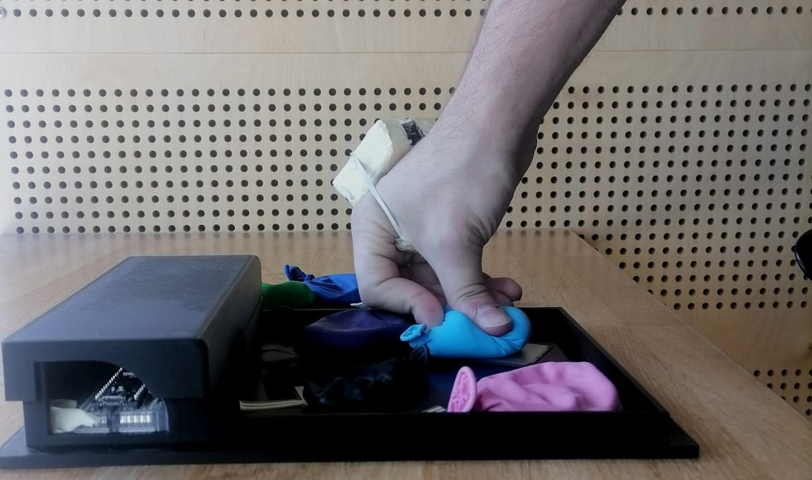
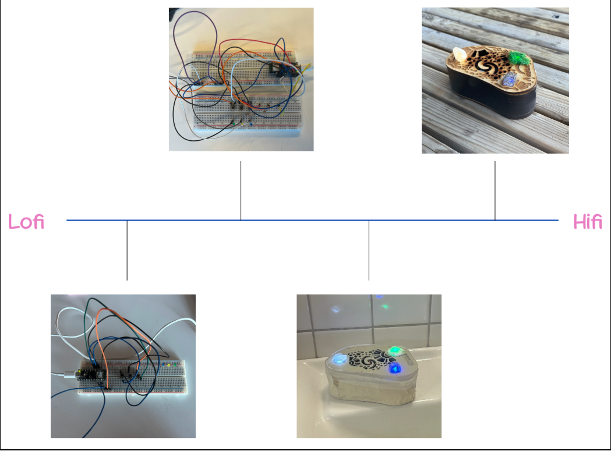
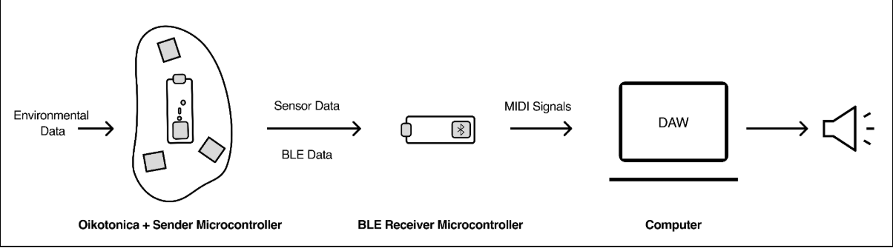

Embodied Feedback of Materials in DMI
Exploring the Relationship Between Embodied Interaction and Sonic Feedback
Type: Collaborative Work / Research & Design Project
Role: Development, Interface Design, Research, Sketching, Prototyping
Team: Individual
Tools & Libraries: C++, Arduino IDE, ControlSurface.h, Laser Machining, Hardware Integration

Overview
Touch: Embodied Feedback of Materials in DMI is a material exploration project that seeks to understand the relationship between embodied interaction with materials and sonic feedback in digital musical instruments.
One of the most common issues with digital musical instruments is the lack of tactile feedback, which can lead to a disconnect between the performer and the instrument. This project aims to address this issue by exploring how different materials can provide embodied feedback to the performer, enhancing their perception of the instrument in relation to the sound that is being produced.
Although this is a common issue between music instrument makers, a lot of them would embed tactile feedback mechanisms into their designs to improve the user experience. However, in comperison to its acoustic and electric counterparts, the sonic output is relational and not mechanical, losing the direct connection between the performer and the sound.
This project led into exploring 7 materials considering their tacticle properties and affordences, embedding 4 sensors throught each iterration. The prototypes were conducted with n (forgot how many, around 12) performers and music makers.
Demo Video (No-DEMO yet, I forgot to edit it.)
Do you want to know more?
Design Process & Methods
The methods for Oikotonika was participatory design with focus on user testing and feebdack of 3 musicians, a DJ, and a professional sonifying artist. The design process was iterative, with four iterations throughout the timeline.

This design process had the goal to understand how we approach the user's possible behaviors and interactions with the instrument, resulting in different setups and configurations, as well as different opportunities revealed through participatory observations and interviews.
Technical Details
Technologies Used
The base of Oikotonika is build on two Arduino Nano Sense 33 BLE and three built-in sensors (HTS221, APDS-9960, PDM). Each have been mapped and converted into MIDI CC signals, through the use of MIDIUSB library. One is the receiver connected to the computer, the other which has the Oikotonika body is the sender.

Key Learnings
This project was one of the most challenging, yet rewarding experience. I've learned a lot working with integrating MIDI data and implementing sensors within a creative context for sound. This project also inspired me to explore further in TUI for music and sonic interactions.
Within my years studying Interaction Design, I've come to appreciate the uniqeness of designing interfaces for sound. It also taught me how tangibility and embodiment plays a big role in expressive interactions.
For Oikotonika, me and my team realised that the concept is not only a interactive tool, but a medium of dialogue between the environment and the user. The space was the place where the sonifying "discussion" was acted upon, while the user's movements and interactions shaped the sonic output in relation to it.
This resulted into a live sonified performance and a tool to assist artists to iterate during production stages, revealing experimental workflows connected with sounds across spaces and environments while the body is the anchor between the two.
Future Improvements
- A more robust visual feedback for the user to ease the learning gap between the user and the environment.
- An additional software feature to adjust the sensitivity of the sensors.